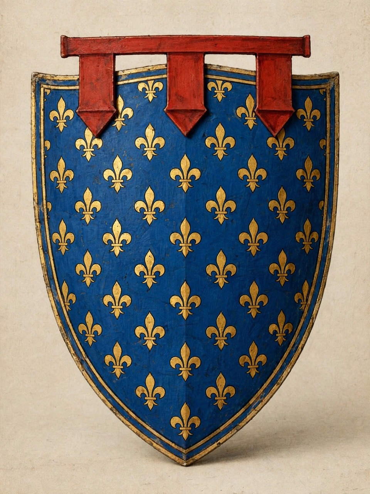

Capetian House of Anjou
From Wikipedia, the free encyclopedia
| Capetian House of Anjou | |
|---|---|
 | |
| Parent house | House of Capet |
| Founder | Charles I of Anjou (1226/27–1285) |
| Founded | 1246 (grant of Anjou and Maine) |
| Titles | King of Sicily and Naples, King of Jerusalem, King of Hungary, King of Poland, Count of Anjou, Count of Provence |
| Dissolution | 1435 (senior line, Naples); later branches continued |
The Capetian House of Anjou, also called the House of Anjou-Sicily, was a royal house and cadet branch of the direct French House of Capet, founded by Charles I of Anjou, youngest brother of King Louis IX of France (Saint Louis). Granted the counties of Anjou and Maine in 1246, Charles built a Mediterranean empire that at its height encompassed southern Italy, Sicily, Provence and claims to Jerusalem and the Latin East.
Charles I and the Sicilian kingdom
With papal backing as a champion against the Hohenstaufen, Charles conquered the Kingdom of Sicily, defeating Manfred at Benevento (1266) and the last Hohenstaufen heir, Conradin, at Tagliacozzo (1268). His harsh rule provoked the Sicilian Vespers revolt of 1282, which cost him the island of Sicily to the Crown of Aragon; his successors retained the mainland kingdom centred on Naples.
Naples, Hungary and Poland
The Neapolitan line of Robert the Wise (r. 1309–1343) made Naples a centre of early humanism. A cadet branch, descending from Charles Martel, took the throne of Hungary in 1308 under Charles Robert and produced Louis the Great, who also became King of Poland in 1370. Queen Joanna I of Naples' tumultuous reign ended with her murder in 1382; rival Angevin claims fuelled decades of conflict with the Durazzo branch, ending in 1435 with the death of Joanna II, after which Naples passed to Alfonso V of Aragon.
Later branches
The Valois-Anjou branch, founded by Louis I, Duke of Anjou (son of John II of France), pursued the Neapolitan claim through the Italian Wars era; René of Anjou — titular King of Naples, Duke of Lorraine and Count of Provence, celebrated as a patron of the arts — was its most famous member. Angevin ambitions left a durable mark on the politics of Italy, Hungary and France.